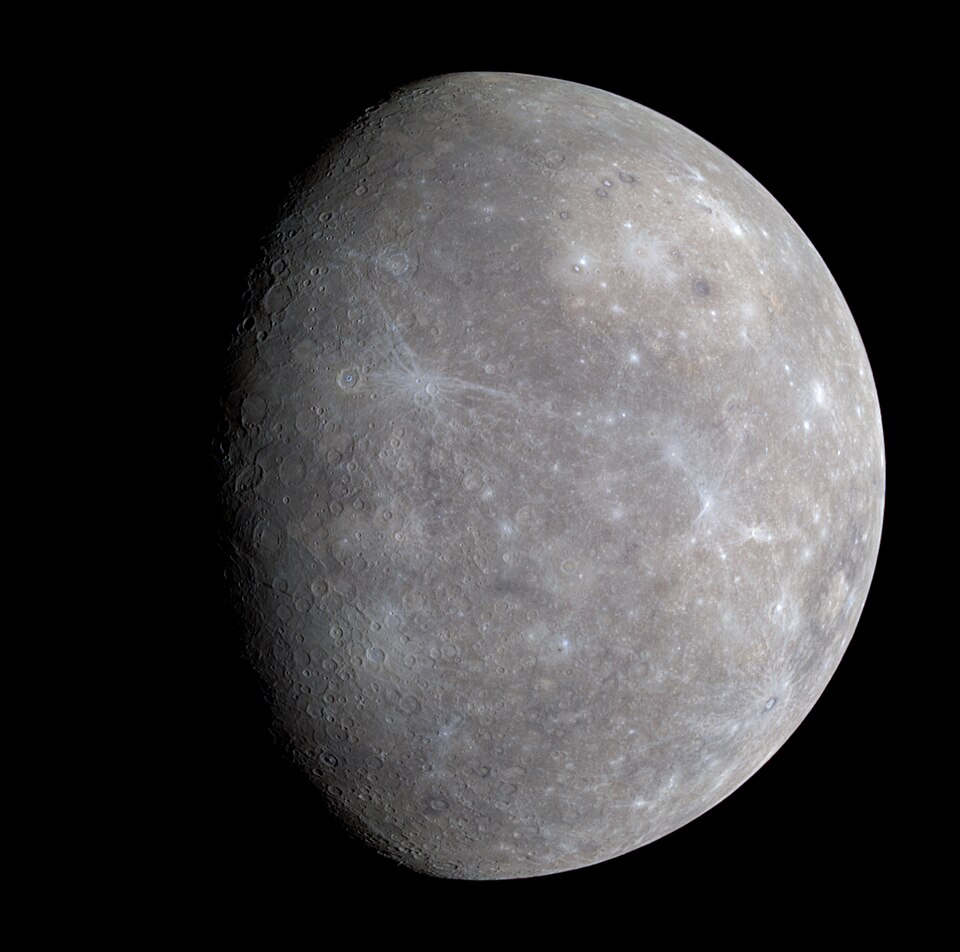
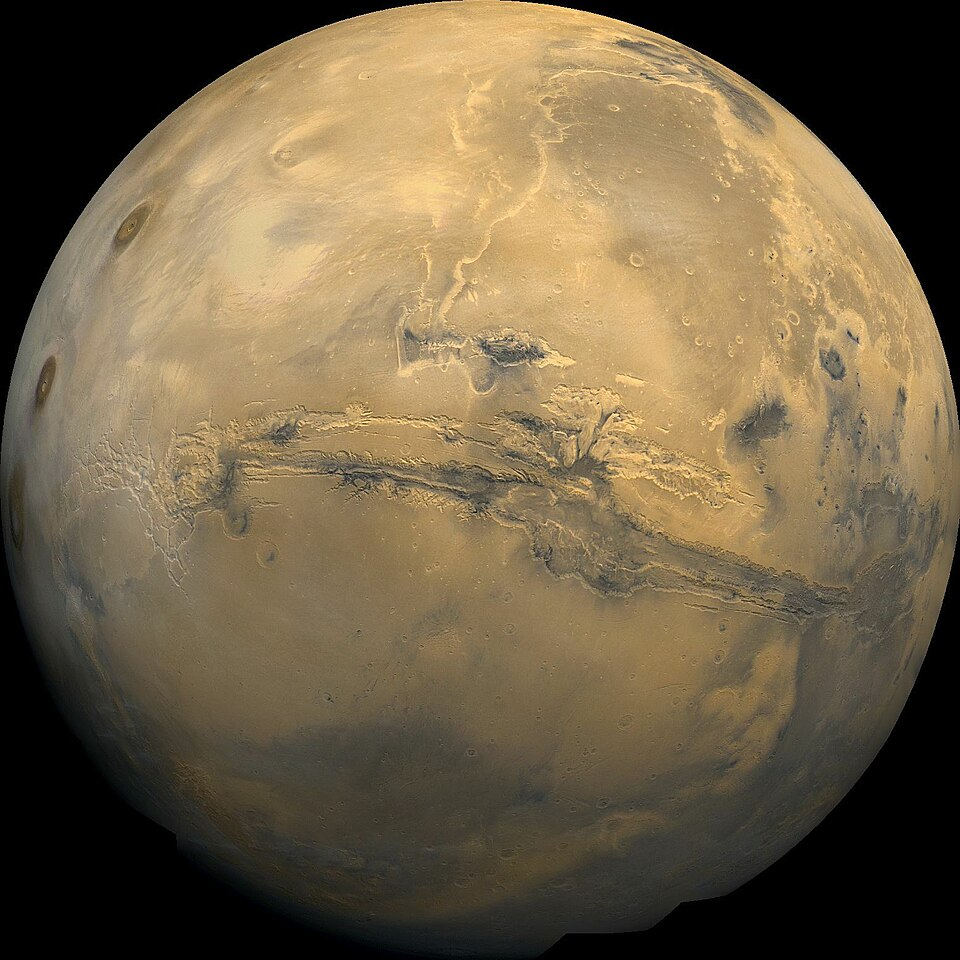
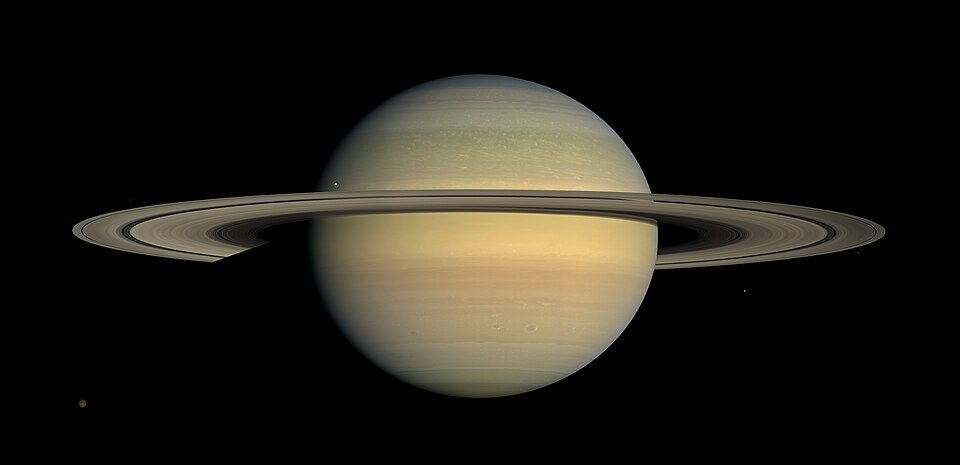
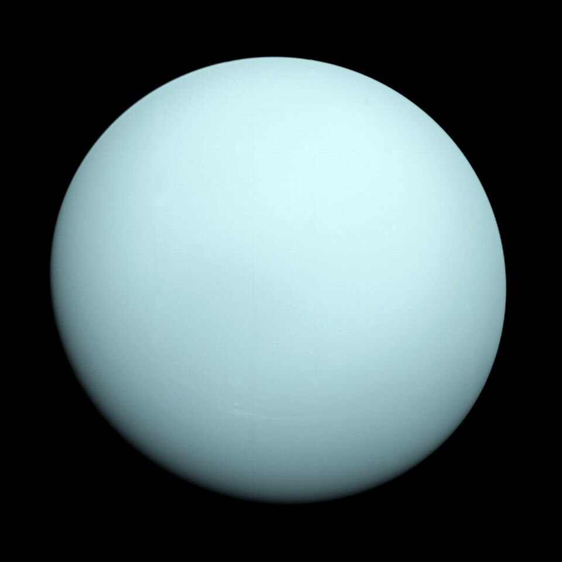
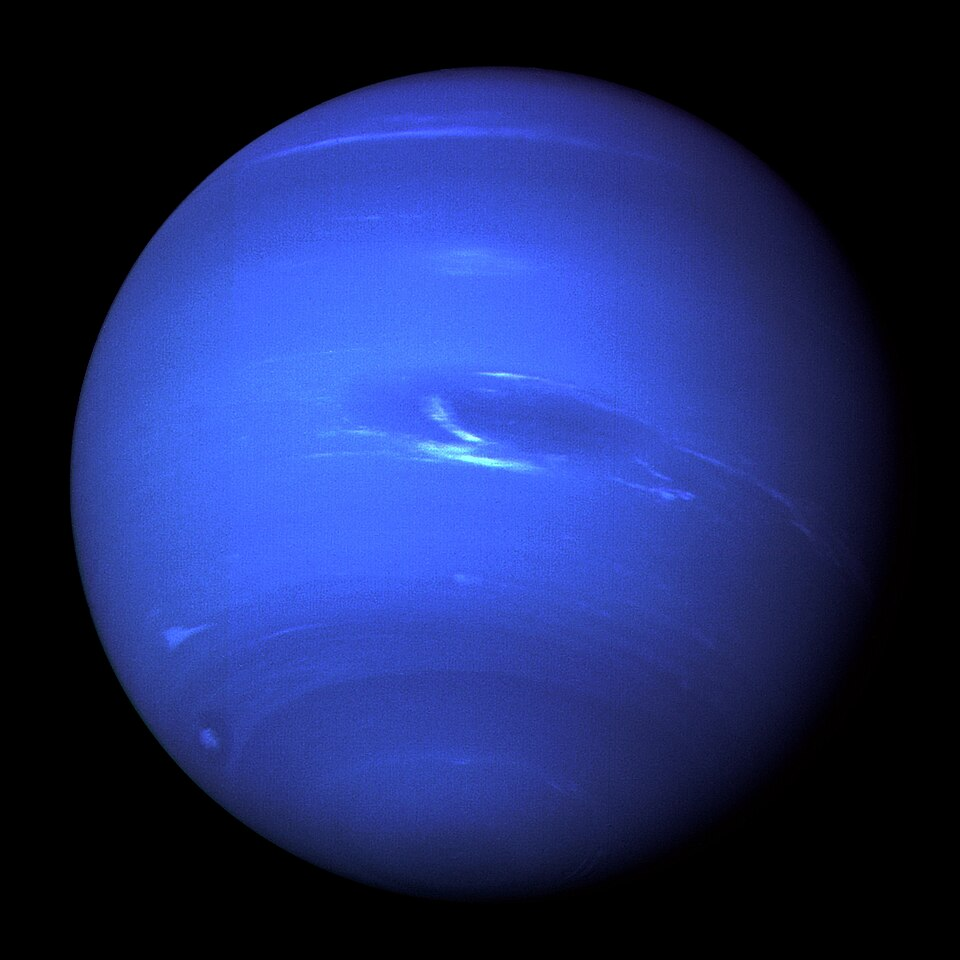

Ocho mundos, dos grupos
Los planetas
Por su ubicación y composición, los planetas se clasifican en interiores y exteriores.
Planetas interiores
Son los cuatro planetas más cercanos al Sol. Tienen una superficie rocosa.

Mercurio
El planeta más cercano al Sol y el más pequeño.
Mercurio
Mercurio es el planeta más pequeño y el más cercano al Sol. Su superficie tiene muchos cráteres.

Venus
Un mundo rocoso con una atmósfera muy densa.
Venus
Venus tiene una atmósfera muy densa y es el planeta más caliente del Sistema Solar.

Tierra
El único planeta conocido con vida en su superficie.
Tierra
La Tierra tiene agua líquida en su superficie y es el único planeta conocido que alberga vida.

Marte
Se reconoce por su color rojizo y sus grandes volcanes.
Marte
Marte es conocido como el planeta rojo. Tiene volcanes enormes, valles y señales de agua antigua.
Planetas exteriores
Están más lejos del Sol. Júpiter y Saturno son gigantes gaseosos; Urano y Neptuno, gigantes helados.

Júpiter
El planeta más grande, famoso por la Gran Mancha Roja.
Júpiter
Júpiter es el planeta más grande. La Gran Mancha Roja es una tormenta que se observa desde hace mucho tiempo.

Saturno
Un gigante gaseoso rodeado por brillantes anillos.
Saturno
Saturno es un gigante gaseoso. Sus anillos están formados principalmente por fragmentos de hielo y roca.

Urano
Un gigante helado que gira con una inclinación extrema.
Urano
Urano es un gigante helado. Su eje está muy inclinado, por eso parece girar de lado.

Neptuno
El planeta más lejano del Sol y azotado por fuertes vientos.
Neptuno
Neptuno es el planeta más lejano del Sol. Tiene un color azul y vientos muy rápidos.
Comparación de algunos planetas
Diámetro aproximado y distancia media al Sol
| Planeta | Diámetro (km) | Distancia al Sol (millones de km) |
|---|
| Mercurio | 4 879 | 57.9 |
|---|
| Venus | 12 104 | 108.2 |
|---|
| Tierra | 12 742 | 149.6 |
|---|
| Marte | 6 779 | 227.9 |
|---|
| Júpiter | 139 820 | 778.6 |
|---|
| Saturno | 116 460 | 1 433.5 |
|---|
| Urano | 50 724 | 2 872.5 |
|---|
| Neptuno | 49 244 | 4 495.1 |
|---|